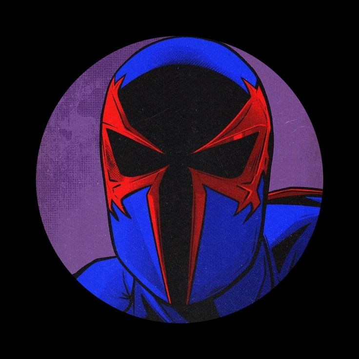
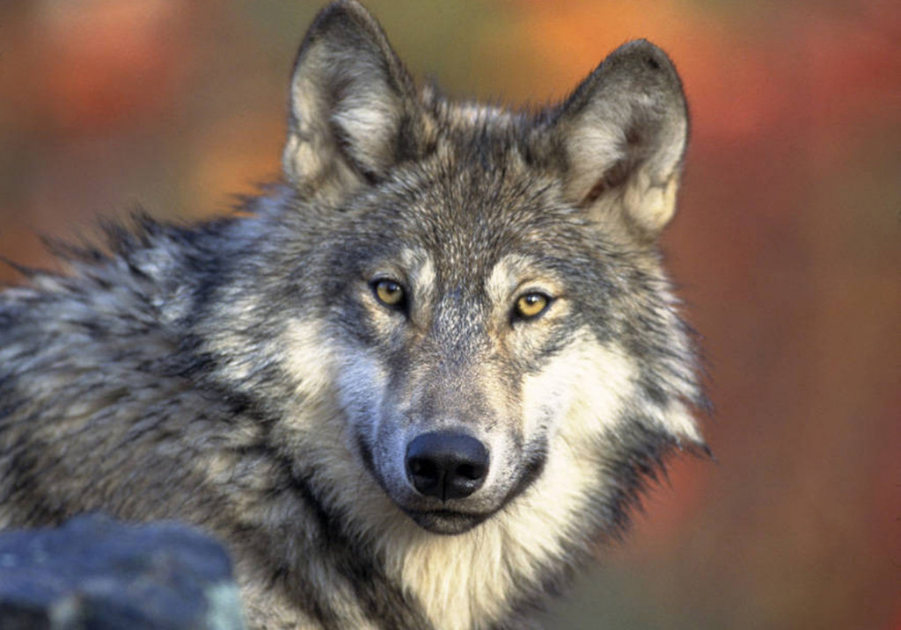
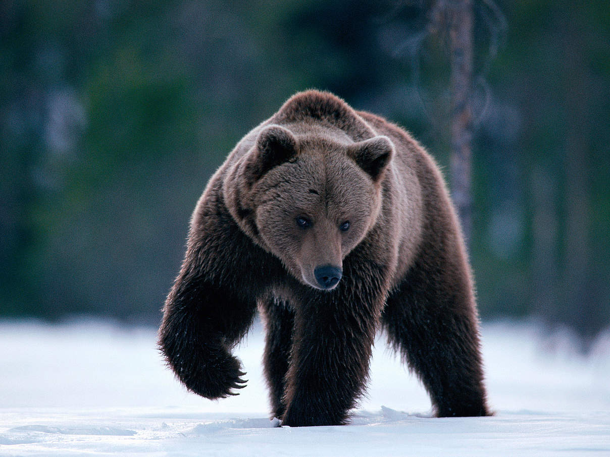
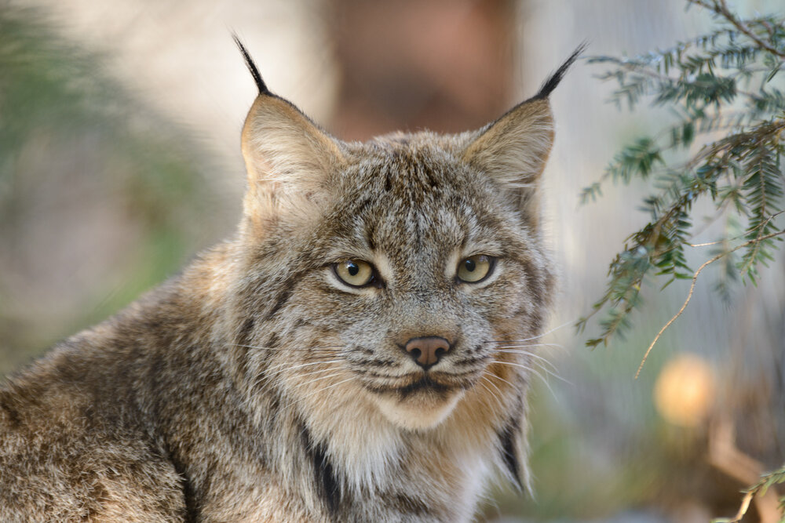
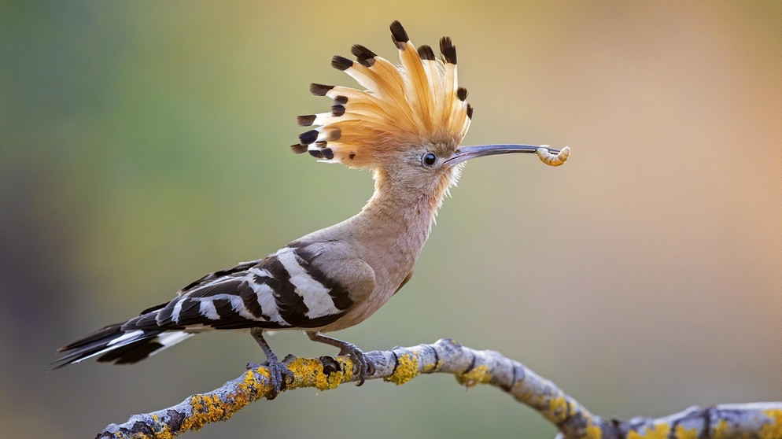
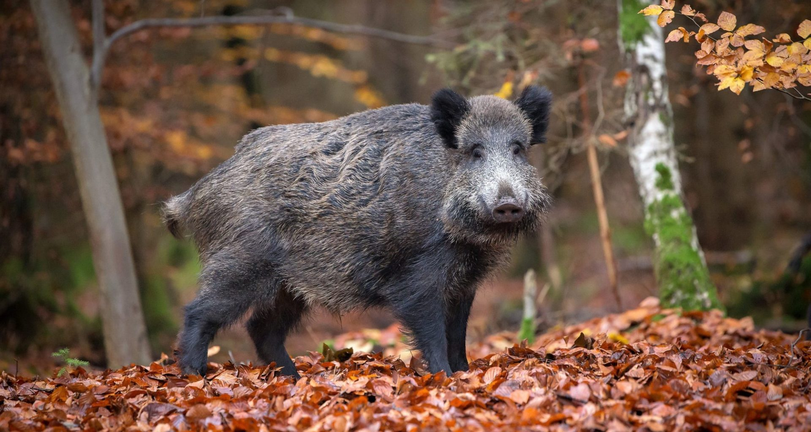
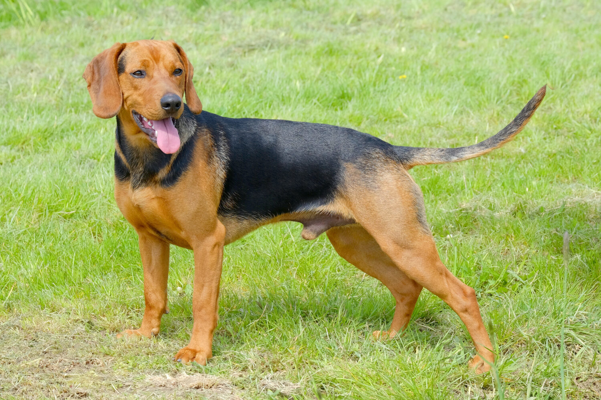

Tauche ein in die Vielfalt und Geschichte Serbiens
/
Travel
Ein Guide für Serbien


Sivi vukovi
Sivi vukovi
Die Sivi vukovi (Graue Wölfe), waren eine Einheit des serbischen Innenministeriums,
die von Slobodan „Lugar“ Miljković befehligt wurde.
Den Mitgliedern der Sivi Vukovi werden von den UN-Anklägern Kriegsverbrechen im Bosnienkrieg in
der Umgebung der nordbosnischen Stadt Bosanski Šamac vorgeworfen.
Slobodan Miljković wurde am 8. August 1998 in einem Café in Kragujevac erschossen. Als Täter
wurde Branislav Luković, Mitarbeiter des serbischen Staatssicherheitsdienstes, verhaftet und im
Februar 1999 zu 15 Jahren Gefängnis verurteilt.
A Rugged, Remote Foodie Haven
“It’s a rugged remoteness. The glacial-swept highlands conjure up fairy tales, the mighty
fjords breed a difficulty of exploration that boasts an incredible sense of accomplishment,”
said Andy Nichols, expert outdoor guide of Great Canadian Trails. “To sum up the
community here, it’s simple: It’s a place where no one locks their doors.” Offering UNESCO
World Heritage Sites, sprawling national parks, picturesque seaside villages, a world-class
food scene, and quite possibly the country’s friendliest locals, you’d think Newfoundland
would be swarming with tourists. However, this Canadian island that sits off the eastern coast
of the country, flanking Nova Scotia and Prince Edward Island, sees a mere fraction of the
visitors of British Columbia and Alberta. Newfoundland’s most inspiring national park, Gros
Morne, sees a quarter of the visitors of Alberta’s famed Banff National Park and Lake
Louise—two parks that are anticipating more than 5 million visitors this year alone. If you’re
craving hikes that both challenge and inspire; food that’s as local as you can possibly get
(think fish caught off the harbor where you’re eating); and secluded campsites, skip the
crowds of Alberta and head to Newfoundland instead. Get 1 year of American Vogue + a
limited edition tote. Subscribe now. “Newfoundland has all that western Canada has, from
soaring mountain ranges to deep valleys and gorges, yet it is truly untouched. You can go and
hike in peak season with a handful of people, not thousands,” said Ian Stone, guide and
partner of Great Canadian Trails. “You can experience a national park that is not bursting at
the seams with people but bursting with natural surroundings, moments of peace. I feel this is
the type of place that Banff was 100 years ago.”
Geology

Braunbär

Luchs

Wiedehopf
Wildlife

Wildschwein Schlange

Serbischer Laufhund
Want the inside story?
Trip ideas, travel offers, and contests. When you
sign up for our newsletter or follow us on social,
you're always part of the story.